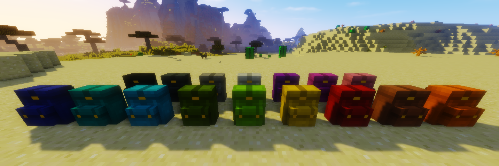
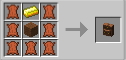

카테고리 제작 목적 : 마인크래프트가 유투브 컨텐츠 제작 및 새로운 세계관과 관계 모델링을 보여주는 툴로 활용되는 시작점인 지금 창작자 여성들이 다양한 마인크래프트 모드를 쉽게 접하고 활용할 수 있도록 한글로 정보를 제공하여 전체적인 접근도 향상에 기여하는데 그 목적이 있다. 개개의 모드를 상세히 설명하는 하위 문서를 먼저 만든 후 마인크래프트 전체 모드문서를 생성할 예정.

마인크래프트 모더 HeckinChloe가 만든 멜 수 있는 가방 추가모드. 현 버전 1.12.2까지 지원된다. 인벤창에 가방탭만 추가되는 여타 다른 가방 모드와는 달리 실제로 등에 가방을 멘 것이 보이는 점에서 차별성이 있는 모드. 가방을 염색하여 색색별로 꾸밀 수 있으며 죽으면 가방을 드랍한다.1

어떤 양털을 넣든 기본형인 갈색 가방이 나온다. 갈색 가방과 염색약을 조합해야 원하는 색상의 가방을 얻을 수 있다. 가방을 메려면 일단 바닥에 놓고 쉬프트를 누른 상태에서 가방을 부수면 되는데, 기본적으로 바닥에 설치한 채로 상자처럼 이용한 후 부숴서 메는 식이다. 메고 있는 가방을 내려놓으려면 쉬프트를 누른 채로 오른쪽 클릭을 하면 된다. 다른 플레이어가 메고 있는 가방을 여는 것도 가능하다.